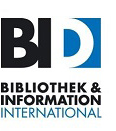

General Information
Venue
Staatsbibliothek zu Berlin – Preußischer Kulturbesitz, Haus Potsdamer Straße
Potsdamer Str. 33
10785 Berlin
Germany
Web: https://staatsbibliothek-berlin.de
How to get to the library
https://staatsbibliothek-berlin.de/en/about-the-library/sites
Organizational note: Unfortunately there is only a small number of power sockets available at the location, so please bring your mobile device fully charged.
Accomodation
You’ll find several hotels located near the venue via the usual online booking portals or the official site of Berlin Tourism.
Hotels in Berlin must charge a local tax for private overnight stays on behalf of the city.
In order to be exempted, please fill out the form and give it to the receptionist when you check in at your hotel:
Conference Dinner (12.09.23 / 19:00)
Lindenbräu
Bellevuestraße 3-5
10785 Berlin
39,50€
Typical Berlin Buffet, drinks are not included
https://www.bier-genuss.berlin/en/lindenbraeu-at-the-potsdamer-square/
Berlin Information
https://www.visitberlin.de/en/berlin-tourist-info-centres
Berlin Public Transport
Travel Grants
Non-German conference participants can apply for a grant from BI-International, the standing committee of BID, the Federal Association of German Library and Information Associations. It provides financial support for congress attendances in Germany with German government funding. For more information see:
https://bi-international.de/en/grants/
